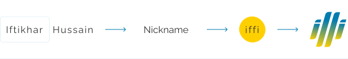

I’m a Frontend Web Developer and a UI/UX designer, focused on branding, identity,
interactions and user experiences while making things simple.
I specialize in creating user-centered designs that improve the overall experience for the end user. My passion lies in understanding the needs and goals of the users and translating them into intuitive and visually appealing designs. I am constantly seeking new challenges and opportunities to learn and grow as a designer, and I am excited to share my work with you.
Thank you for visiting my portfolio, feel free to reach out if you have any questions or if you're interested in working together.
I have been working as a Frontend Web Developer and Figma Designer at ULT Company for the past two years. My commitment to excellence and continuous improvement drives me to create exceptional user experiences.
As a dedicated freelancer with two years of experience in frontend web development and UI/UX design, I have successfully completed numerous projects, showcasing my expertise in crafting visually appealing and highly functional websites and applications.
University of Sargodha, Pakistan
2012 - 2016
Zakariya Science Academy Layyah
2009 - 2012
Government High School
Railway Road Karor Lal Eason
2007 - 2009
My name is “Iftikhar Hussain” but they call me “i f f i”. when i was planning to design my logo, i was focused on making it short and simple. it clicked, “what if it is i f f i?” i started drawing it on the paper and eventually it came out to be the final logo.
